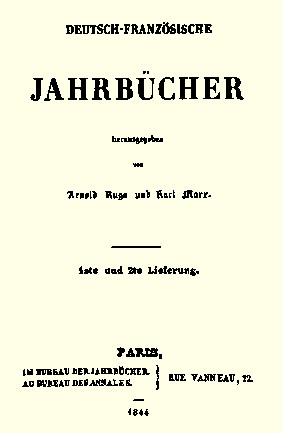
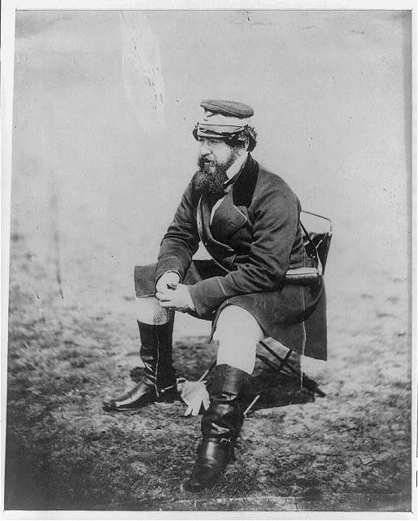
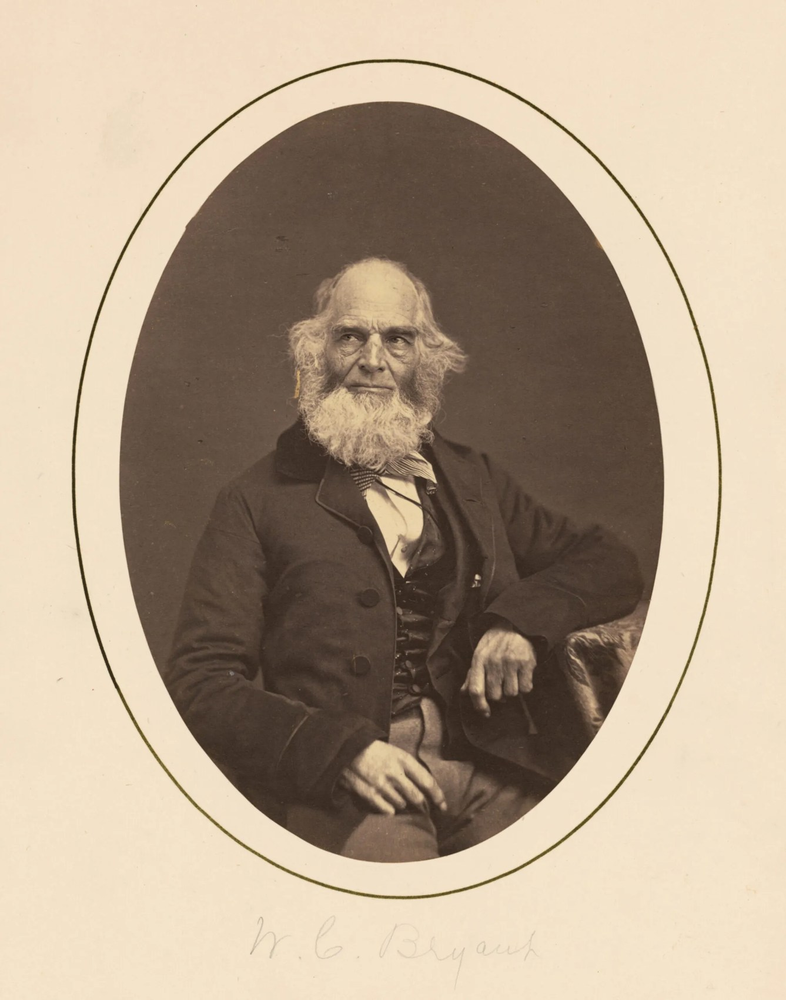
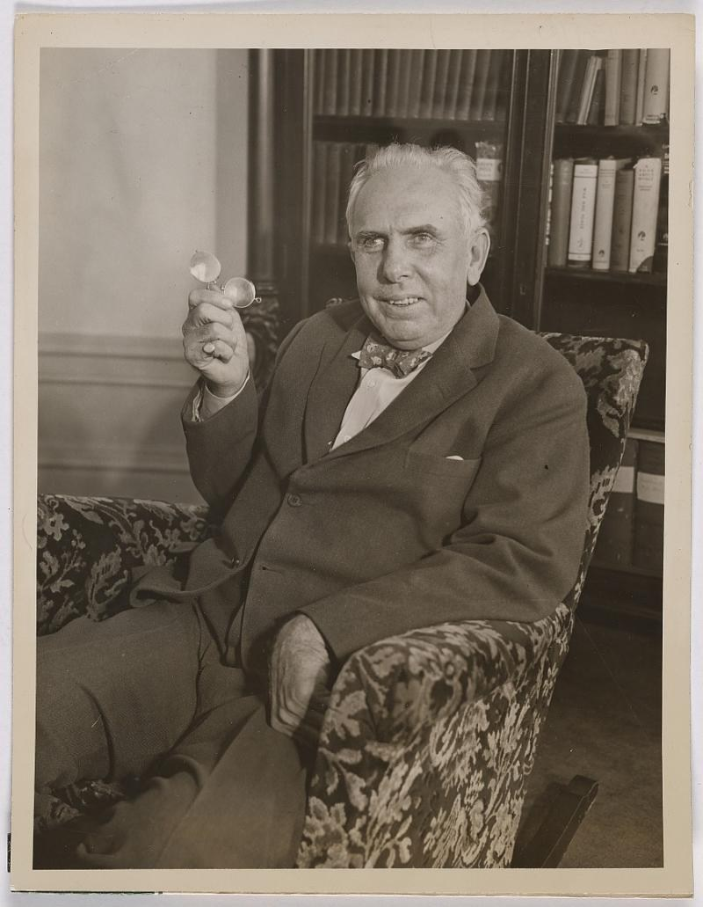

Journal des débats
От парламентского отчёта к фельетону, роману с продолжением и влиятельной политической редакции.

Февраль 1848
Как падение монархии изменило французскую прессу и почему свобода печати оказалась непрочной.

Бальзак
Писатель, типограф, редактор и критик прессы. Личный опыт, из которого выросли Утраченные иллюзии.

Германия до объединения
Французское господство, реформы, цензура и спор об австрийском или прусском пути объединения.

Маркс и Руге
Как работа в Рейнской газете и переписка о новом журнале меняли программу молодого Маркса.

Цена свободного слова
Коббет, братья Хант, Карлайл и газеты, которые спорили с парламентом, судом и налоговым ведомством.

Из палатки в редакцию
Наблюдение, свидетельства, почта и телеграф. Метод и язык военной корреспонденции второй половины XIX века.

Поэт во главе газеты
Редакторская линия Evening Post, первые американские обзоры и издательская программа Роберта Уолша.

Нью-Йорк печатает
Дешёвая газета, быстрый набор и новые профессии. Как складывалась массовая информационная индустрия.

Драйзер до и после романа
Как композиция, повторы и городская деталь работают в документальной прозе Драйзера.
Каждый материал открывается на отдельной странице. Внутри есть содержание, подписи к историческим изображениям и ссылки на источники. Газетные сканы и портреты можно открыть крупнее. На телефоне страницы перестраиваются под ширину экрана.